Halogeny to pierwiastki występujące w siódmej grupie głównej układu okresowego, a więc są to: fluor, chlor, brom oraz jod.
Barwy oraz stan skupienia tych pierwiastków przedstawione są poniżej w tabelce:
| sam | Roztwór wodny/ alkoholowy, rozpusczalniki o kwasnych wodorach | Roztwór organiczny (niepolarne) | \[H_{2}O\ \text{/}\ NaOH\] | |
|---|---|---|---|---|
| Fluor \(F_{2}\) |
Bezbarwny gaz
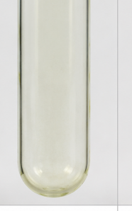 |
Brak | bezbarwny | bezbarwny |
| Chlor \(Cl_{2}\) |
Zielonkawy, zóltawy gaz
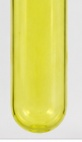 |
Bezbarwny – żółtawy
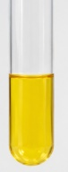 |
żółty | bezbarwny |
| Brom \(Br_{2}\) |
Czerwonobrazowa ciecz nad nią są czerwone pary
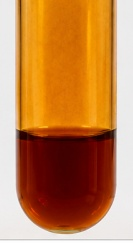 |
Slomkowy – jasno brunatny
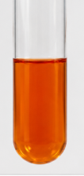 |
Pomarańczowy – brunatnego (zależne od stężenia) | bezbarwny |
| Jod \(I_{2}\) |
Czarnofioletowe ciało stale i nad nią fioletowe pary
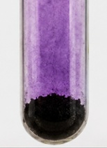 |
Brunatny
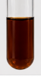 |
Fioletowy- czarnego (zależne od stężenia) | bezbarwny |
Reaktywność halogenów maleje z wzrostem okresu – czyli inaczej im wyżej w układzie okresowym tym bardziej reaktywny pierwiastek.
Wodorki halogenów to kolejno:
\[HF,HCl;HBr;HI\]
Wszystkie mają właściwości kwasowe, z czego \(HI\) jest najbardziej reaktywny, gdyż moc kwasów rośnie w dół grupy. Wynika to z różnicy promieni tych pierwiastków i atomu wodoru, a tym samym gorszym się nakładaniem podczas zwiększania się promienia halogenu, a więc osłabienia wiązania wodór – halogen.
Z wymienionych związków najsilniejsze i jedyne omawiane na poziom matury wiązanie wodorowe tworzy fluorowodór - \(HF\) .
\(HF\) jest słabym kwasem, czasem zachowującym sie jak kwas wieloprotonowy, przey większych stężeniach, z uwagi na łatwość tworzenia agregatów powiązanych wiązaniem wodorowym \(F^{-}·s HF\)
Związek ten dodatkowo reaguje ze szkłem, znajdując zastosowanie przy trawieniu szkła:
\[SiO_{2} + 4HF \rightarrow SiF_{4} + 2H_{2}O\]
Anion \(F^{-}\) ma silne właściwosći kompleksotwórcze wobec wielu metali; najczęściej tworząc aniony kompleksowe, w których \(F^{-}\) jest dołączony do kationu metalu będącego centrum koordynacyjnego.
Aniony chlorkowe bromkowe jodkowe, również mają właściwości kompleksotwórcze, ale znacznie słabsze niż fluorki
Otrzymywanie fluoru. Fluor otrzymywany jest metodą elektrochemiczną, przez elektrolizę soli fluorkowych:
\[2F^{-} \rightarrow F_{2} + 2e^{-}\]
Jest to w zasadzie jedyna metoda, gdyż inne utleniacze chemiczne są zbyt łagodne, a sam fluor jest skrajnie silnym utleniaczem.
Otrzymywanie chloru
Chlor otrzymywane jest głównie przez elektrolizę soli kuchennej bądź soli morskiej, której głównym składnikiem jest \(NaCl\) :
\[2NaCl + 2H_{2}O \rightarrow Cl_{2} + NaOH + H_{2}\]
Laboratoryjne natomiast otrzymuje się go przez działanie silnymi utleniaczami, takimi, jak \(MnO_{2};KMnO_{4}\) czy \(PbO_{2}\) na kwas solny:
\[MnO_{2} + 4HCl \rightarrow MnCl_{2} + Cl_{2} + 2H_{2}O\]
\[2KMnO_{4} + 16HCl \rightarrow 2KCl + 2MnCl_{2} + 8H_{2}O + 5Cl_{2}\]
\[PbO_{2} + 4HCl \rightarrow PbCl_{2} + Cl_{2} + 2H_{2}O\]
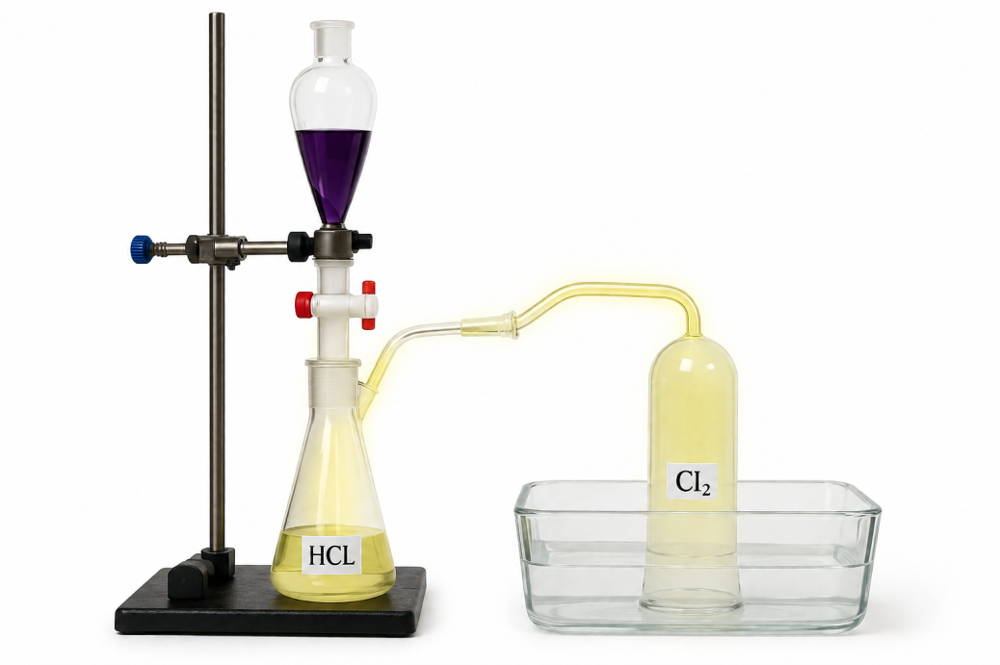
Otrzymywanie bromu.
Brom otrzymuje się również przez elektrolizę soli bromkowych:
\[2NaBr + 2H_{2}O \rightarrow Br_{2} + NaOH + H_{2}\]
Jednak częściej w laboratorium przez reakcję bromianu (V) z jonami bromkowymi w środowisku kwaśnym:
\[KBrO_{3} + 5KBr + 3H_{2}SO_{4} \rightarrow 3Br_{2} + 3K_{2}SO_{4} + {3H}_{2}O\]
Metoda ta praktycznie zachodzi z stuprocentową wydajnością.
Brom można też wydzielić dodając do soli bromkowych mocniejszego utleniacza jakim jest gazowy chlor \(Cl_{2}\) :
\[2NaBr + Cl_{2} \rightarrow 2NaCl + Br_{2}\]
Otrzymywanie jodu.
Analogicznie pozyskuje się jodu – przez reakcję z mocniejszymi utleniaczami jakim jest \(Cl_{2}\) i \(Br_{2}\)
\[\mathbf{2}\mathbf{NaI + C}\mathbf{l}_{\mathbf{2}}\mathbf{\rightarrow}2NaCl + I_{2}\]
\[2NaI + Br_{2} \rightarrow 2NaBr + I_{2}\]
Oraz czasem przez reakcję synproprocjonacji jodanów (V) i jodków:
\[KIO_{3} + 5KI + 3H_{2}SO_{4} \rightarrow 3I_{2} + 3K_{2}SO_{4} + {3H}_{2}O\]
Reaktywność halogenów.
Halogeny w reakcji z wodorem dają kwasy halogenowodorowe, reakcja ta jest odwracalna jedynie dla otrzymywania \(HI\) :
\[H_{2} + F_{2} \rightarrow 2HF\]
\[H_{2} + Cl_{2} \rightarrow 2HCl\]
\[H_{2} + Br_{2} \rightarrow 2HBr\]
\[H_{2} + I_{2} \rightleftarrows 2HI\]
Halogeny reagują z zasadami, najczęściej według schematu
\[2NaOH + X_{2} \rightarrow NaX + NaXO\]
Np.
\[2NaOH + Br_{2} \rightarrow NaBr + NaBrO\]
Gdzie \(NaXO\) - sól kwasu halogenowego (I) . reakcja ta tłumaczy zanik barwy roztworu halogenu po dodaniu do \(NaOH\) , gdyż po reakcji halogen przereaguje
Analogiczna równowaga ustala się w roztworze wodnym
\[H_{2}O + X_{2} \rightleftarrows HX + HXO\]
Np.
\[H_{2}O + Cl_{2} \rightleftarrows HCl + HClO\]
Jest ona przesunięta w stronę substratów niż produktów.
Halogeny tworzą związki międzyhalogenowe reagując nawzajem z sobą, i szczególnie dla fluoru mogą mieć one inna stechiometrię niż \(X - Y,\ \) mogą to być \(XF_{3};XF_{5};XF_{7}\)
Związki te otrzymujemy w bezpośredniej syntezie między halogenami, dla związków z fluorem decyduje stosunek stechiometryczny, który związek międzyhalogenowy otrzymamy:
\[Cl_{2} + 3F_{2} \rightarrow 2ClF_{3}\]
Związki te tworzą kryształy molekularne; występuje w nich wiązanie spolaryzowane, oczywiście atom mniej elektroujemny obdarzony jest ładunkiem dodatnim, a bardziej elektroujemny obdarzony jest ładunkiem ujemnym
Halogeny tworzą chętnie jony wielohalogenowe, w myśl reakcji:
\[X_{2} + X^{-} \rightleftarrows X_{3}^{-}\]
Np.
\[I_{2} + I^{-} \rightleftarrows I_{3}^{-}\]
Znane są również jony międzyhalogenowe, jednak są one znacznie rzadziej spotykane:
\[I_{2} + Br^{-} \rightleftarrows I_{2}Br^{-}\]
Związki międzyhalogenowe oraz jony wielohalogenowe często łamią regułę oktetu wykorzystując orbitale \(d\) do utworzenia wiązań.
Ta równowaga umożliwia lepsze rozpuszczanie halogenów w roztworach wodnych lub zawierających jony halogenów np. w jodynie.
Halogeny reagują też z pierwiastkami VI i V grupy oraz ich wodorkami dając związki zbudowane z dwóch różnych niemetali,
\[NH_{3} + 3X_{2} \rightarrow NX_{3} + 3HX\]
Np.
\[NH_{3} + 3I_{2} \rightarrow NI_{3} + 3HI\]
Oraz dalszymi pierwiastkami 5 tej grupy układu okresowego:
\[P_{4} + 6X_{2} \rightarrow 4PX_{3}\]
W nadmiarze halogenu \(PX_{3}\) reaguje dalej
\[PX_{3} + X_{2} \rightarrow PX_{5}\]
Jak i dla VI grupy
\[S + Cl_{2} \rightarrow SCl_{2}\]
Otrzymane związki są halogenkami kwasowymi, czyli związkami niemetali z halogenami, które po reakcji z wodą dają odpowiednie kwasy tlenowe niemetali oraz kwasy halogenowodorowe:
\[PCl_{3} + {3H}_{2}O \rightarrow H_{3}PO_{3} + 3HCl\]
Halogeny reagują również z \(CO\) dając halogenki kwasu węglowego
\[CO + Cl_{2} \rightarrow COCl_{2}\]
\(COCl_{2}\) jest zwyczajowo nazywany fosgenem i był używany podczas pierwszej wojny jako gaz bojowy, znane są również analogii bromkowe:
\[CO + Br_{2} \rightarrow COBr_{2}\]
Pochodne te reagują z wodą z wytworzeniem kwasu węglowego (nietrwałego), który rozpada się do \(CO_{2}\) oraz kwasów typu \(HX\)
\[COCl_{2} + H_{2}O \rightarrow CO_{2} + 2HCl\]
W przypadku reakcji hydrolizy fosgenu w środowisku zasadowym otrzymujemy odpowiednie pochodne tych kwasów stabilne w zasadach, a więc węglany i chlorki:
\[COCl_{2} + 4NaOH \rightarrow Na_{2}CO_{3} + 2NaCl + 2H_{2}O\]
Kwasy tlenowe halogenów
Halogeny tworzą szereg kwasów tlenowych, najczęściej na nieparzystych stopniach utlenienia, przy czym nie każdy stopień utlenienia jest możliwy dla każdego pierwiastka:
| Stopień utlenienia halogenu | ||||
|---|---|---|---|---|
| \[+ I\] | \[HOF\] | \[HClO\] | \[HBrO\] | \[HIO\] |
| \[+ III\] | \[HClO_{2}\] | \[HBrO_{2}\] | ||
| \[+ V\] | \[HClO_{3}\] | \[HBrO_{3}\] | \[HIO_{3}\] | |
| \[+ VII\] | \[HClO_{4}\] | \[HBrO_{4}\] | \[HIO_{4}\] | |
| \[H_{5}IO_{6}\] | ||||
Wszystkie kwasy halogenów na +I stopniu utlenienia są nietrwałe w postaci protonowanej, rozpadają się najczęściej na wodę i tlenek halogenu (I)
\[2HClO \rightarrow Cl_{2}O + H_{2}O\]
Moc kwasów:
Moc kwasów tlenowych zależy od atomu będącego atomem centralnym, im niżej w układzie okresowym tym słabszy kwas. Wynika to z coraz niższej elektroujemności atomu centralnego, a więc większym ładunku ujemnym na atomie tlenu i tym samym słabszej polaryzacji wiązania tlen – wodór. \(HClO > HBrO\)
Zależność mocy kwasu od ilości tlenów – im kwas tego samego pierwiastka zbudowany jest z większej ilości tlenów, a tym samym wyższy stopień utlenienia danego kwasu tym lepsza jest stabilizacja ładunku ujemnego, a więc stabilniejszy anion. Powoduje to wzrost mocy danego kwasu, a więc np.: \(HClO < HClO_{2} < HClO_{3} < HClO_{4}\)
Prawdę powiedziawszy najlepiej jest sprawdzić moc kwasów przez sprawdzenie ich \(pK_{a}\) w tablicach chemicznych.
Właściwości utleniające kwasów maleją z wzrostem stopnia utlenienia- należy zwrócić na to uwagę, bo wydaje się to być sprzeczne z logiką, im więcej tlenów w kwasie tym słabsze właściwości utleniające; najstabilniejsze są kwasy/ sole na (V) stopniu utlenienia.
\[NaClO = podchoryn\ sodu = chloran\ (I)sodu = wybielacz\]
\[CaCl(ClO) = wapno\ chlorowane.\]
Większość reakcji dla soli przebiega jako reakcje dyspropocjacji w warunkach termicznych lub zasadowych oraz synproporcjonacji w warunkach kwaśnych:
\[3NaCl^{I}O \rightarrow NaCl^{V}O_{3} + 2NaCl\]
\[NaBrO \rightarrow NaBrO_{3} + 2NaBr\]
Sole tych kwasów są w miarę stabilne w środowisku zasadowym i temperaturze pokojowej. Stabilności soli nie da się jednak przewidzieć po stopniu utlenienia – jest inna dla każdego halogenu, np. Sole kwasu \(HBrO_{4}\) są ciężkie do otrzymania, tak samo jak \(HBrO_{2}\) , natomiast \(HClO_{4}\) jest jednym z bardziej stabilnych kwasów chlorowych (VII). Stosunkowo łatwe do otrzymania i stabilne są kwasy jodowe (VII), otrzymujemy je ulteniając jodany (V) przy użyciu chloru w środowisku zasadowym:
\[IO_{3}^{-} + 6OH^{-} + Cl_{2} \rightarrow IO_{6}^{5 -} + 2Cl^{-}\ + 3H_{2}O\]
Jodany (VII) mogą w ciele stałym występować jako
\[H_{5}IO_{6}\ lub\ HIO_{4}\]
Drugie z jodanów, sole zawierające anion \(HIO_{4}\) wymagają odwodnienia.
Reakcji rozkładu anionów tlenowych kwasów halogenowych sprzyja zakwaszenie w obecności jonów \(X^{-}\) :
\[ClO^{-} + Cl^{-} + 2H^{+} \rightarrow Cl_{2} + H_{2}O\]
\[ClO_{3}^{-} + \ 5Cl^{-} + 6H^{+} \rightarrow Cl_{2} + 3H_{2}O\]
Analogicznie reakcje te przebiegają z bromem ora jodem
Produkty rozkładu termicznego niektórych soli tlenowych zależą od warunków prowadzenia procesu, np.:
\[4NaClO_{3} \rightarrow 3NaClO_{4} + \ NaCl\]
\[{NaClO_{3} -^{MnO_{2}} \rightarrow \ NaCl}^{\ } + \frac{3}{2}O_{2}\]
Warto wiedzieć, iż jon \(ClO_{4}^{-}\) jest jednym z niewielu jonów, który strąca jony potasowe \(K^{+}\)
Z uwagi na silne właściwości utleniające halogenów i ich agresywność wobec ludzi (brom jest silnie drażniący, fluor jest bardzo niezdrowy, a chlor to gaz bojowy)czasem wymagane jest ich usunięcie.
Ogólnie do ich usunięcia używa się reduktorów; najczęściej jest nim tiosiarczan \(Na_{2}S_{2}O_{3}\) :
Tiosiarczan sodu utlenia się do siarczanów (VI) jeżeli używamy bromu i chloru:
\[S_{2}O_{3}^{2 -} + Cl_{2} \rightarrow 2SO_{4}^{2 -} + Cl^{-}\]
Po zbilansowaniu w środowisku zasadowym otrzymujemy:
\[S_{2}O_{3}^{2 -} + Cl_{2} \rightarrow 2SO_{4}^{2 -} + Cl^{-}\]
\[S_{2}O_{3}^{2 -} + 4Cl_{2} + 10OH^{-} \rightarrow 2SO_{4}^{2 -} + 8Cl^{-} + 5H_{2}O\]
Analogicznie z bromem:
\[S_{2}O_{3}^{2 -} + 4Br_{2} + 10OH^{-} \rightarrow 2SO_{4}^{2 -} + 8Br^{-} + 5H_{2}O\]
Z jodem ta reakcja przebiega inaczej:
\[2S_{2}O_{3}^{2 -} + I_{2} \rightarrow S_{4}O_{6}^{2 -} + 2I^{-}\]
Ta reakcja jest podstawą tzw. miareczkowania jodometrycznego, który polega na miareczkowaniu powstałego jodu (lub pozostawionego przy miareczkowaniu odwrotnym) przy użyciu \(S_{2}O_{3}^{2 -}\) . Jod wykrywamy skrobią – barwi się ona na niebiesko w obecności jodu, przy miareczkowaniu całego jodu (braku jodu w badanej próbce) roztwór odbarwia się
Klasyką zadań maturalnych jest zadanie, w którym mamy zaprojektować doświadczenie, w którym porównamy aktywność halogenów.
Rozwiązanie tego zadania zawsze wygląda tak samo –do mieszaniny roztworów wodno – organicznego (np. mieszanina woda – benzyna albo woda – chloroform) zawierającego halogen bardziej aktywny dodajemy wodny roztwór mniej aktywnego anionu halogenu. W trakcie procesu zachodzi reakcja wyparcia mniej aktywnego przez bardziej aktywny – czyli możemy do chloru dodawać bromków i jodków, a do bromu tylko jodków. Z uwagi na różne barwy halogenów w roztworach organicznych przy przereagowaniu halogenów widzimy zmianę barwy warstwy organicznej. Możemy również stosować wariant bez roztworu organicznego, jednak jest on mniej wyraźny, jeżeli chodzi o zmianę barwy. Możemy mieć reakcje
\[Cl_{2} + 2Br^{-} \rightarrow Br_{2} + 2Cl^{-}\]
\[zólty\ \ \ \ \ \ \ \ \ \ \ \ \ \ \ czerwony\ \ \ \ \ \ \]
\[Cl_{2} + 2I^{-} \rightarrow I_{2} + 2Cl^{-}\]
\[zólty\ \ \ \ \ \ \ \ \ \ \ \ \ \ \ fioletowy\ \ \ \ \ \ \]
\[Br_{2} + 2I^{-} \rightarrow I_{2} + 2Br^{-}\]
\[czerwony\ \ \ \ \ \ \ \ \ \ \ \ fioletowy\ \ \ \ \ \ \ \ \ \ \]
Np. doświadczenie dla porównania aktywności bromu i jodu wygląda następująco. Narysuj zestaw, podaj obserwacje, reakcje i wnioski. Możesz używać dowolnych odczynników.
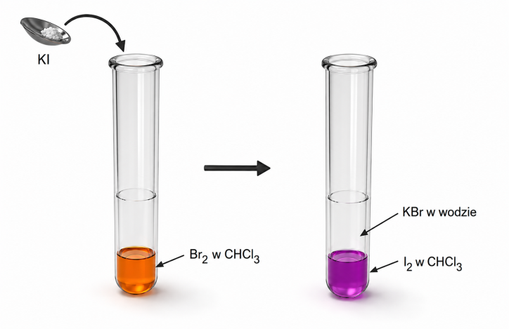
Obserwacje:
Roztwór chloroformu zmienia barwę z pomarańczowej/czerwonej na różową/ fioletową.
Reakcje
\[Br_{2} + 2I^{-} \rightarrow I_{2} + 2Br^{-}\]
Wnioski
Brom jest aktywniejszy od jodu, gdyż go wypiera z jego związków
Analogicznie reakcja, w której wykazujemy, że \(Cl_{2}\) jest bardziej aktywny od \(Br_{2}\) wygląda następująco:
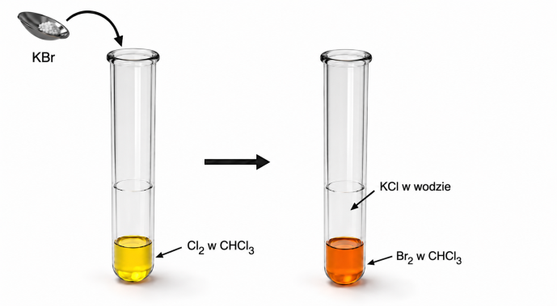
Eksperyment, w którym wykazujemy, że \(Cl_{2}\) jest aktywniejszy od \(I_{2}\) :
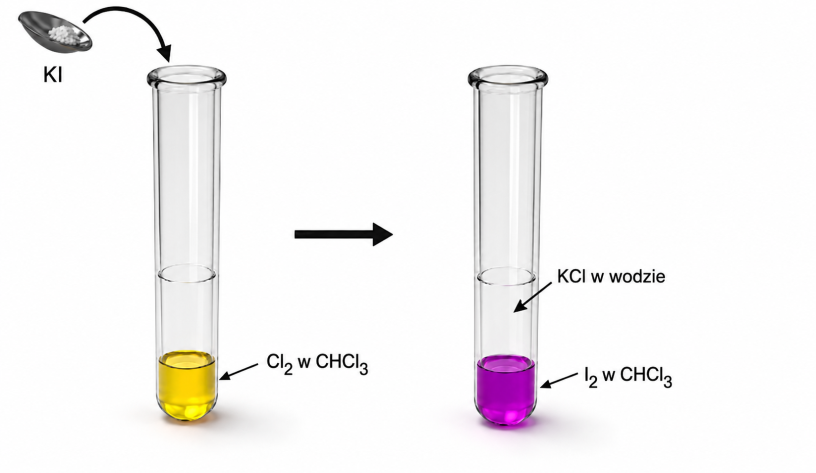